生活中比较整数、小数大小的方法比较简单，而比较分数的大小就不那么简单，因此也就产生了多种多样的比较方法。
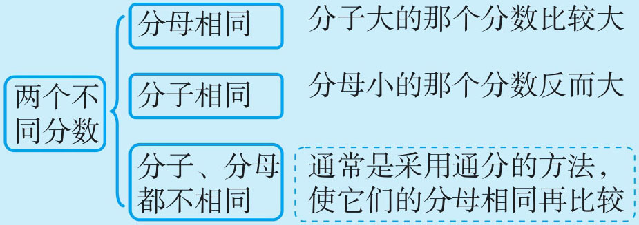
通分的方法不一定最简捷，还有一些特殊比较法：巧通分子法、基准数法、交叉相乘法、倒数法、半比法、等差比较法、相加相减比较法……。无论哪种方法，均来源于：“分母相同，分子大的分数大；分子相同，分母小的分数大”这一基本方法。
例1 把
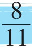
、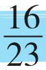
、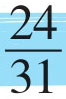
从小到大排列。这几个分子、分母都不相同的分数，如果通分变成同分母的分数比较麻烦。我们观察分子8、16、24，发现它们的最小公倍数是48，就利用分数的基本性质，将它们变成分子都是48的分数，再按分子相同分母小的反而大的方法进行比较。这种方法我们称之为“巧通分子法”。
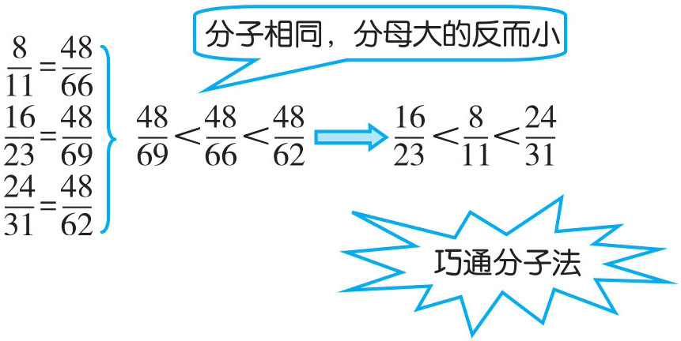
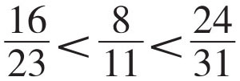
例2 比较两组分数的大小
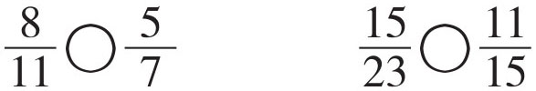
方法一：异分母的分数比大小，先通分，变成同分母的分数，分子大的分数就大。
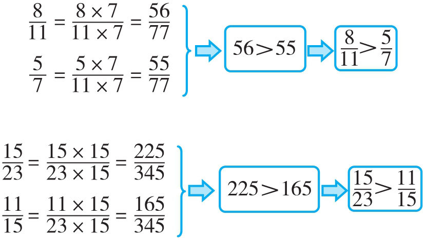
方法二：将两个分数的分子分别与另一个分数的分母相乘，哪个分子所在的积大，这个分数大，我们称之为“交叉相乘法”。
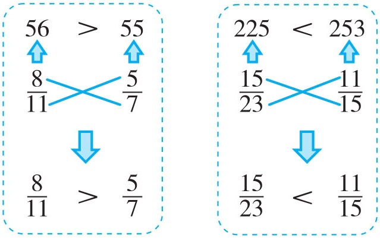
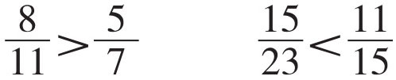
例3 比较
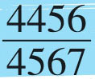
、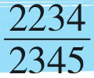
、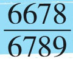
的大小。这几个分数的分子、分母都较大，利用“通分”与“交叉相乘”都很难。仔细观察发现，分子与分母比较接近，并且它们的差都是111，我们可以借助一个标准数“1”，分别减去这几个分数，利用所得的差的大小逆向推出原分数的大小。
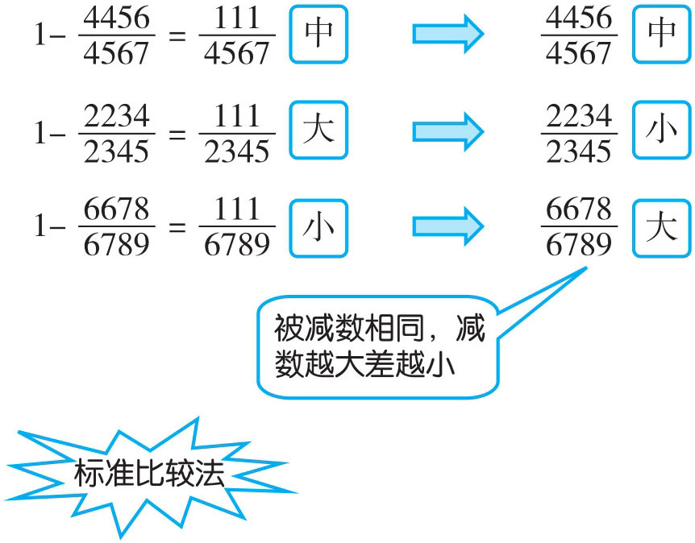
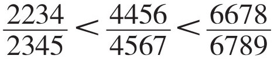
例4 有五个分数
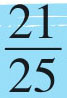
、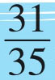
、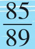
、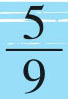
、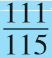
，从小到大排列第二个分数是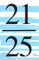
，那么从大到小排列第二个分数是哪个数？五个分数比大小，分子分母都没有相同的，并且通分比较繁杂。仔细观察发现它们分子与分母的差都是4（实际可以借助例3的方法，用标准“1”分别去减，通过差的大小逆推减数的大小），像这些分数，我们称之为“等差分数”，等差分数比大小，分子、分母较大的分数就大（理由见例3）。
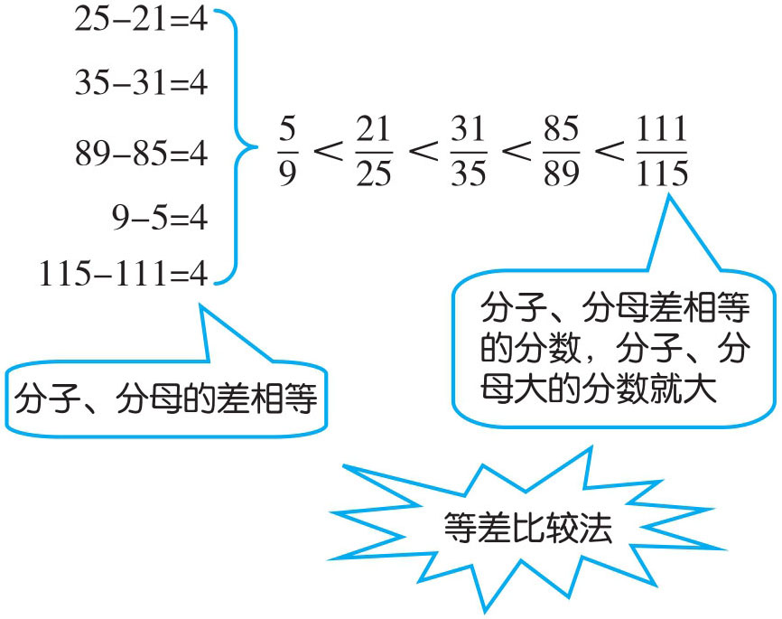
从大到小排列第二个分数是
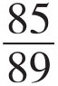
。例5 比较
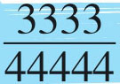
、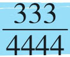
的大小。这两个分数通分、交叉相乘都不太容易，也不符合等差比较法的条件，但这两个分数都有一个共同的特点：都有公因数
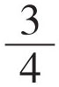
，提取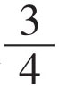
后得到的分数都是由“1”组成，且分母都是分子的10倍加1，具有这种特点的分数，我们可以采用“倒数比较法”。倒数大的分数反而小。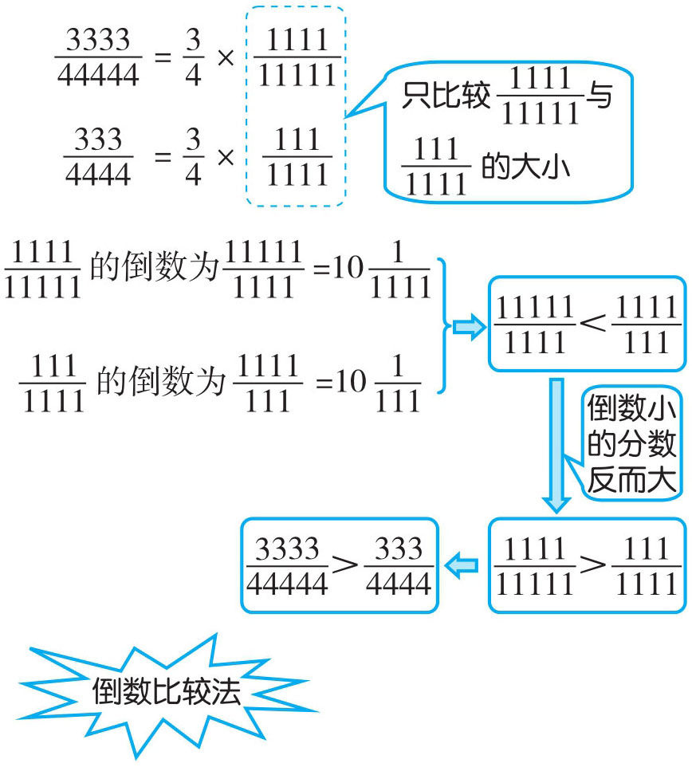
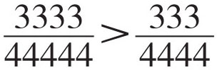
1．在□里填上适当的数。
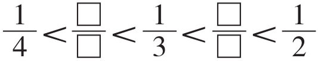
2．比较下列分数的大小。
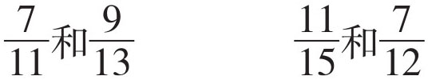
3．比较下列分数的大小。
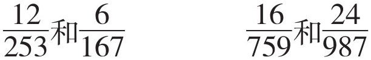
4．将
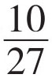
、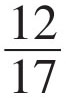
、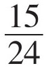
、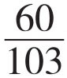
按从大到小的顺序排列。5．比较
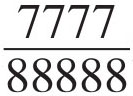
和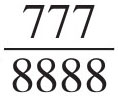
的大小。6．把
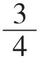
、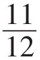
、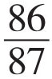
、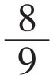
按从大到小的顺序排列。7．在四个分数
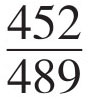
、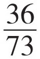
、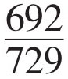
、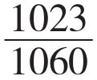
中，哪个分数最大？哪个分数最小？8．比较
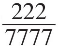
、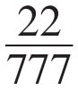
、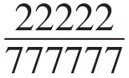
的大小。9．把
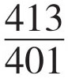
、 、 、 、 按从大到小的顺序排列。